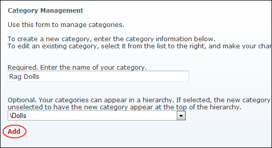
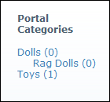

Adding Blog Categories
How to add blog categories using the Blog_Categories module which forms part of the Blog module suite.
- Select Edit Categories from the Blog_Categories module actions menu.
- In the Required. Enter the name of your category text box, enter the category name.

- Optional. Select a parent category from the drop down list if this new category should become a child category (sub-category) of an existing category.
- Click the Add link. The category is now listed in the Portal Categories list displayed on the right of this page.

A Newly Added Blog Category